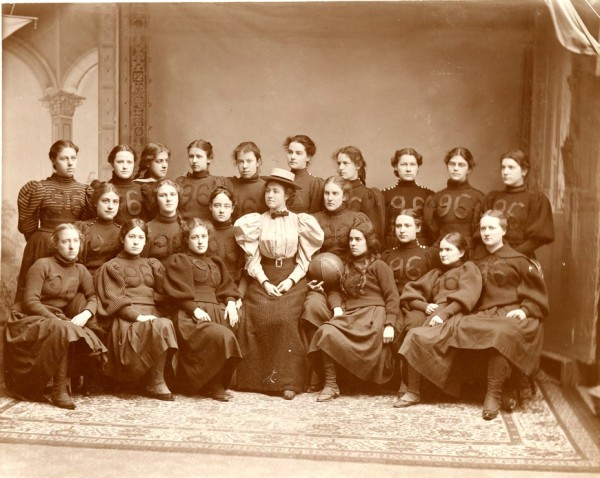
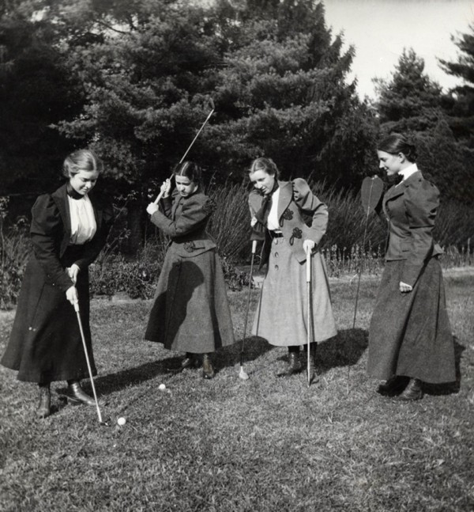
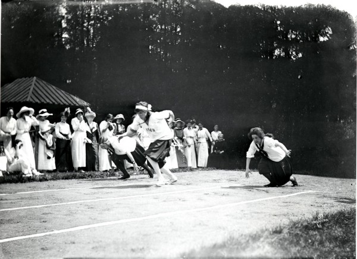
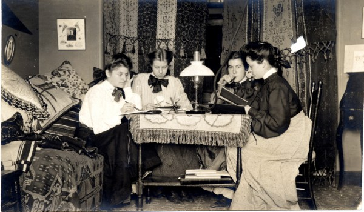
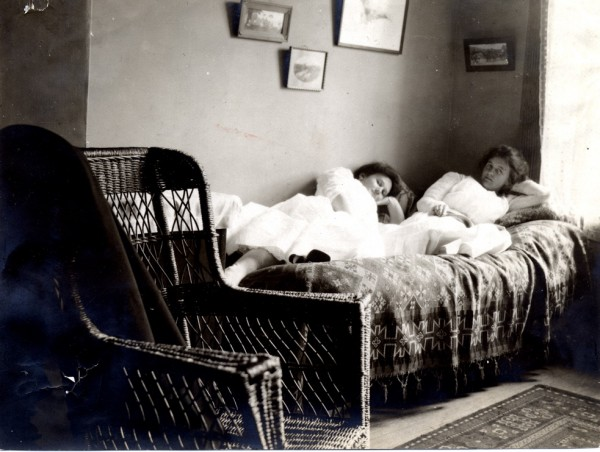

Расположенный в американском городе со сложнопроизносимым для жителя города Кемерово названием Poughkeepsie колледж Вассар стал первым из так называемых колледжей семи сестёр.
Семь сестёр — это основанная 1915 году ассоциация женских колледжей на восточном побережье США.
Кроме колледжа Вассара в ассоциацию входят еще колледж Рэдклифф, колледж Брин Мар, колледж Уэллсл, колледж Маунт-Холиок, колледж Барнарда и колледж Софии Смит.
Раньше обучение вообще было преимущественно раздельным, вот и в колледже Вассара аж до 1969 года дипломы выдавали только женщинам. Сразу после войны в колледже правда начало обучаться небольшое количество юношей, но по причине принципиальности в соблюдении устава колледжа юноши по договорённости получали при выпуске дипломы государственного университета Нью-Йорка.
Сегодня в колледже обучается 2450 студентов. 60% из них девушки.
Кроме обучения наукам в Вассаре по традиции уделяют много времени физкультуре и спорту. Причём делали это с самого основания. На старых фото, конечно девушки. В спорте и дома.





Ссылки по теме:
Ранее по теме